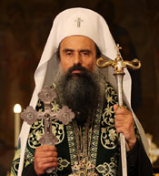
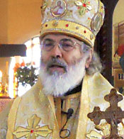

Our Parish
Led by faith, guided by tradition
Parish Leadership

His Holiness Daniil
Patriarch of Bulgaria
His Holiness Patriarch Daniil is the spiritual leader and supreme head of the Bulgarian Orthodox Church — Metropolitan of Sofia, Head of the Bulgarian Orthodox Church. He guides millions of Bulgarian Orthodox faithful worldwide, including our cathedral community in Toronto.

His Eminence Joseph
Metropolitan of New York — Diocese of the USA, Canada & Australia
His Eminence Metropolitan Joseph oversees the Bulgarian Eastern Orthodox Diocese of the USA, Canada, and Australia. Under his spiritual guidance, our cathedral continues its mission of preserving the Bulgarian Orthodox faith and Macedono-Bulgarian cultural heritage in North America.

Father Ioannis Ivanov
Parish Priest — Since June 2023
Born 1979 in Sofia. Graduated from Plovdiv Theological Seminary and the Orthodox Faculty of Theology, University of Bucharest. Awarded the rank of Protopriest (2011). Master's in Pastoral Theology, Pitești, Romania (2012).
Served at Holy Trinity Cathedral, Ruse and parishes in Plovdiv Diocese. Appointed to Sts. Cyril and Methody Cathedral, Toronto in June 2023.
Contact Father IoannisOur Mission
The Sts. Cyril and Methody Macedono-Bulgarian Eastern Orthodox Cathedral exists to provide spiritual nourishment, preserve our cultural heritage, and build a vibrant community of faith for Macedono-Bulgarians and all Orthodox Christians in Toronto.
Spiritual Life
Daily liturgical services, sacraments, and pastoral care for all parishioners
Education
Bulgarian Sunday School teaching language and Orthodox faith since 1914
Community
Social events, cultural celebrations, and support for those in need
Culture
Preserving Macedono-Bulgarian traditions, music, and heritage
Executive Committee 2026
| Position | Name |
|---|---|
| Chair of the Parish Council | Dimitrina Nikolova |
| Vice-Chair of the Parish Council | Nedy Vozis |
| Secretary of the Parish Council | Tzvetanka Karadzhova |
| Treasurer of the Parish Council | Nikolay Kitanov |
| Assistant Secretary | Lina Kostova |
For current committee member names, please contact the church office at 416-368-2828.